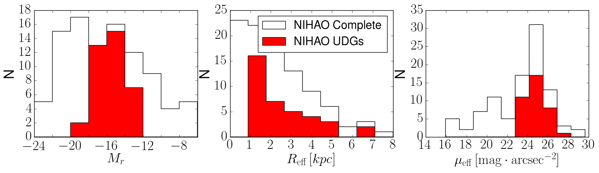
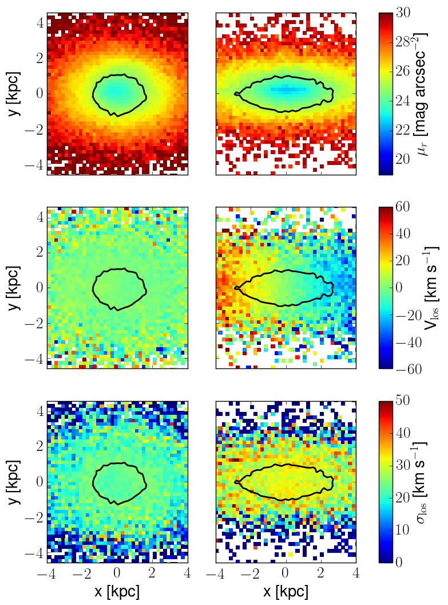
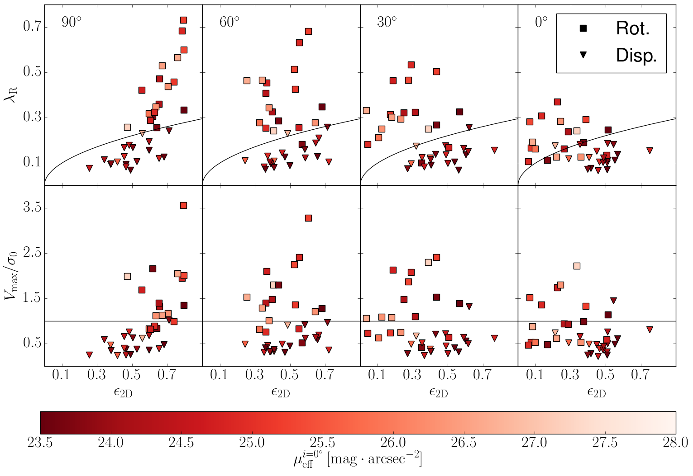
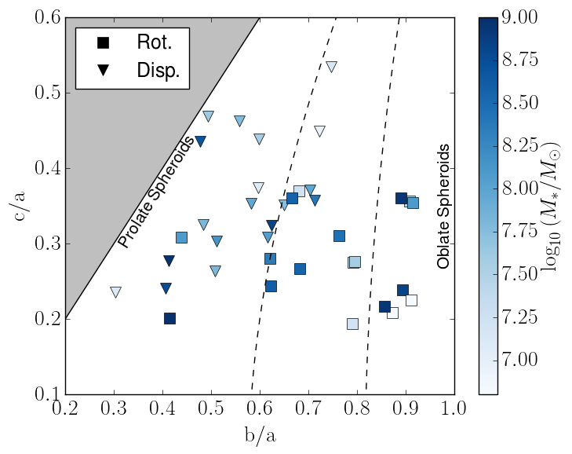
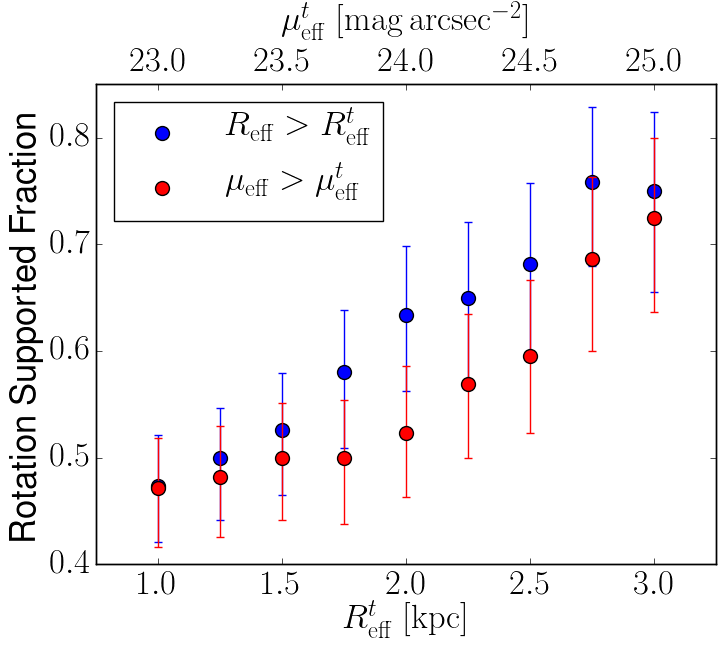
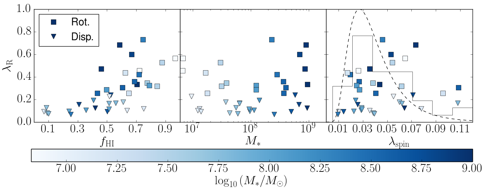
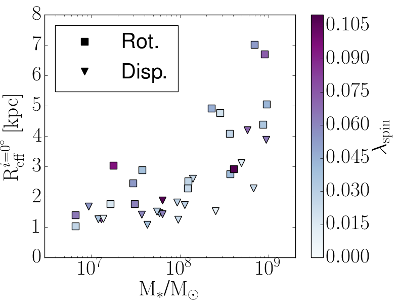
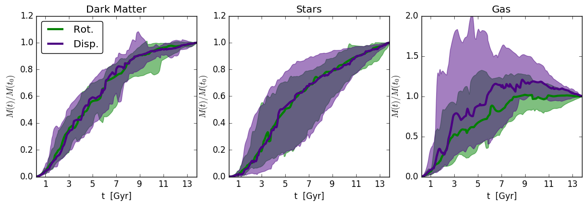
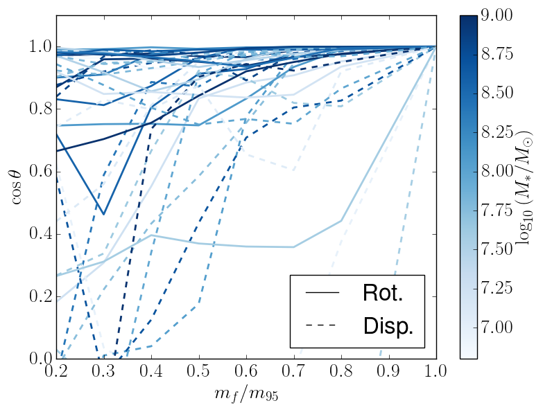
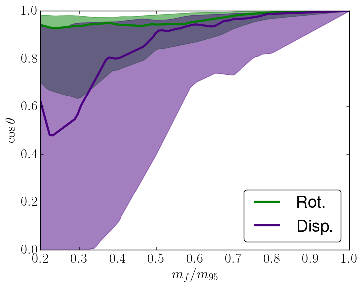

NIHAO XXIV: أنظمة مدعومة بالدوران أم بالضغط؟
تُظهر المجرات فائقة الانتشار المحاكاة توزعا واسعا في حركياتها النجمية
الملخص
في السنوات الأخيرة انفتحت نافذة جديدة على تطور المجرات بفضل تزايد اكتشاف المجرات ذات السطوع السطحي المنخفض، مثل المجرات فائقة الانتشار (UDGs). ولا تزال آلية تكوّن هذه الأنظمة مسألة محل نقاش واسع، وكذلك خصائصها الحركية. في هذا العمل، نعالج هذا الموضوع من خلال تحليل الحركيات النجمية لـ UDGs معزولة تشكلت في مجموعة المحاكيات الهيدروديناميكية NIHAO. ونبني خرائط مسقطة لسرعة خط البصر وتشتت السرعة لحساب الزخم الزاوي النوعي المسقط، ، بهدف توصيف الدعم الحركي للنجوم في هذه المجرات. وجدنا أن UDGs تغطي توزيعا واسعا يمتد من مجرات مدعومة بالتشتت إلى مجرات مدعومة بالدوران، مع وفرات متشابهة في كلا النظامين. وترتبط درجة الدعم بالدوران في UDGs المحاكاة بعدة خصائص، مثل مورفولوجيا المجرة، وارتفاع كسور HI، وكبر أنصاف الأقطار الفعالة مقارنة بالمجموعة المدعومة بالتشتت، بينما يكون دوران هالة المادة المظلمة وتاريخ تراكم الكتلة متشابهين بين الجمهرتين. ونبرهن أن اصطفاف الباريونات الساقطة إلى داخل المجرة البدئية عند مبكرة هو المحرك الرئيس للحالة الحركية النجمية عند =0: فـ UDGs المعزولة المدعومة بالضغط تتكون عبر تراكم غازي غير مصطف، بينما تبني المدعومة بالدوران باريوناتها بطريقة منتظمة. وباحتساب آثار الميول العشوائية، نتنبأ بأن مسحا شاملا سيجد أن ما يقرب من نصف UDGs الحقلية يمتلك أقراصا نجمية مدعومة دورانيا، عند اختيار UDGs ذات نصف قطر فعال أكبر من kpc.
keywords:
مجرات قزمة– مادة مظلمة – سطوع سطحي منخفض1 المقدمة
خلال الجزء الأخير من عقد 1980s، بدأ الفلكيون يجدون مجرات خافتة ومنتشرة إلى حد أنها كانت بالكاد تتميز عن خلفية السماء، (e.g Bothun et al., 1987, 1985; Schombert and Bothun, 1988; Impey et al., 1988). وقد مثّل اكتشاف هذه المجرات، المعروفة باسم المجرات منخفضة السطوع السطحي (LSB)، تحديا لنموذج CDM القياسي لتكوّن المجرات (انظر Bothun et al., 1997). وفي السنوات الأخيرة، أتاحت التحسينات في الأجهزة وتطوير تقنيات اختزال جديدة بلوغ حدود أخفت بكثير في القدر والسطوع السطحي (Merritt et al., 2014; van Dokkum et al., 2015; Fliri and Trujillo, 2016; Trujillo and Fliri, 2016; Martínez-Delgado et al., 2010)، فاتحة نافذة جديدة على كون السطوع السطحي المنخفض ومؤدية إلى اكتشاف المجرات فائقة الانتشار (UDGs، van Dokkum et al. 2015؛ لكن انظر de Blok et al. 1996 للإشارات الأقدم إلى مجرات ذات خصائص مشابهة). وقد وُجدت UDGs في عناقيد منخفضة الانزياح الأحمر (van der Burg et al., 2016; Mancera Piña et al., 2018) مثل Virgo (Mihos et al., 2005; Beasley et al., 2016)، وFornax (Muñoz et al., 2015) وعنقود Coma (Koda et al., 2015; Beasley and Trujillo, 2016; van Dokkum et al., 2015)، حيث جرى تحديد أكثر من من هذه المجرات. ومع ذلك، بدأت تُكتشف في بيئات أقل كثافة: فقد وجد Martínez-Delgado et al. (2016) مجرة UDG في خيط عند أطراف العنقود الفائق Piscis-Perseus، واستخدم Prole et al. (2019) مسح Kilo-Degree Survey (KiDs) للبحث عن UDGs حقلية، وحدد Román et al. (2019) مجرة UDG حمراء في فراغ باستخدام IAC Stripe82 Legacy Survey (Fliri and Trujillo, 2016). وليس واضحا ما إذا كان الفرق الكبير بين عدد UDGs الحقلية وتلك داخل العناقيد عائدا إلى آلية تجعل UDGs أكثر احتمالا للتكوّن في البيئات عالية الكثافة، أم أنه مرتبط بتحيز رصدي، إذ إن استنتاج المسافة إلى هذه الأنظمة أسهل في المناطق الأكثر كثافة، ومن ثم يسهل تحديدها بوصفها UDGs (Román and Trujillo, 2017a).
بوجه عام، ترتبط خصائص UDG بالبيئة التي تعيش فيها: فقد درس Román and Trujillo (2017a) جمهرة UDG في عنقود Abell ووجدوا أن UDGs الأكثر زرقة تعيش في أطراف العنقود. وقدم Román and Trujillo (2017b)، مستخدما UDGs في Hickson Compact Groups، آلية تطورية ممكنة تصل بين الأنظمة الزرقاء المعزولة الغنية بـ HI وUDGs الأكثر احمرارا والفقيرة بـ HI الموجودة في العناقيد (انظر أيضا Trujillo et al., 2017). واستخدم Spekkens and Karunakaran (2018) العينة نفسها وأظهر أن هذه UDGs الزرقاء تمتلك خزانات ضخمة من غاز HI.
كما توحي حركيات نجومها وعناقيدها الكروية، تبدو UDGs مجرات تهيمن عليها المادة المظلمة، وهي عموما تتبع علاقة الكتلة النجمية بكتلة الهالة (انظر Beasley et al., 2016; Toloba et al., 2018; van Dokkum et al., 2019).
أكثر خصائص UDGs إثارة للدهشة هي أنها، على الرغم من امتلاكها كتلا نجمية كتلك الخاصة بالأقزام الصغيرة ()، تمتلك أنصاف أقطار فعالة أكبر من ، شبيهة بتلك الخاصة باللولبيات الكبيرة. وهذان الجانبان معا هما سبب امتلاك UDGs سطوعا سطحيا فعالا منخفضا إلى هذا الحد، يصل إلى (مثلا Yagi et al., 2016). ومع ذلك، كما نوقش في Trujillo et al. (2020)، يعتمد نصف القطر الفعال بقوة على ملف المجرة، ولذلك ينبغي توخي الحذر عند تفسيره بوصفه حجم المجرة. فقد قدموا بالفعل معاملا جديدا، أي نصف القطر الذي تنخفض عنده الكثافة النجمية إلى ما دون ، ويبدو أنه أوثق صلة بالحجم الفيزيائي للمجرة: وبتطبيق هذا المعامل على UDGs، وجد (Chamba et al., 2020) عدم وجود دليل على أنها كبيرة بصورة غير عادية مقارنة بالأقزام الأخرى. ومن ثم، فإن السؤال الناشئ من عملهم لا يتعلق بأحجامها، بل بسبب افتقار UDGs إلى حدبة مركزية في ملفات سطوعها السطحي، بخلاف الأقزام الأخرى ذات الكتل النجمية المشابهة.
حتى اليوم، لا يوجد توافق في المجتمع العلمي بشأن آليات تكوّن UDGs. ويمكننا تمييز مجموعتين من آليات التكوّن المقترحة:
-
1.
تلك التي تتطلب أن تعيش UDGs في مناطق عالية الكثافة، وفي هذه الحالة قد تفسر الآثار البيئية، مثل التجريد بضغط الاندفاع في الأزمنة المبكرة نتيجة سقوط المجرة في العنقود (Yozin and Bekki, 2015; Tremmel et al., 2019, 2020; Sales et al., 2020)، أو التسخين المدي (Carleton et al., 2018)، أو لقاءات الجسمين (Baushev, 2018)، خصائص UDGs داخل العناقيد؛
-
2.
وتلك التي تستدعي آليات داخلية ضمن UDGs نفسها، وتسمح لهذه المجرات بالتكوّن أيضا في الحقل. ويقترح سيناريو الدوران العالي (الذي اقترحه في البداية Amorisco and Loeb 2016، وانظر أيضا Rong et al. 2017; Liao et al. 2019) أن UDGs قد تكون امتدادا طبيعيا لجمهرة الأقزام التي تعيش داخل هالات مادة مظلمة عالية الدوران، بينما يبين السيناريو المدفوع بالتغذية الراجعة، الذي اقترحه Di Cintio et al. (2017) ودعمه لاحقا Chan et al. (2018)، باستخدام مجموعة محاكيات NIHAO (Wang et al., 2015) ومحاكاة FIRE (Hopkins et al., 2014) على الترتيب، أن أحداث المستعرات العظمى المتعاقبة تولد تدفقات خارجية مدفوعة بالتغذية الراجعة تسطح ملفات الكثافة لكل من المادة المظلمة والنجوم، مؤدية إلى السطوع السطحي المنخفض المميز لـ UDGs.
إن آليات التكوّن المذكورة أعلاه ليست متنافية، ويمكن أن تتآزر معا لتشكيل جمهرة UDGs بأكملها (انظر Chilingarian et al. 2019).
يمثل فهم نشوء UDGs في سياق كوسمولوجي تحديا. وعلى وجه الخصوص، يصعب محاكاة مثل هذه الأنظمة الصغيرة، التي تتطلب دقة عالية لحل الفيزياء تحت الشبكية، ضمن بيئات كثيفة تضم مجرات عديدة أكبر كتلة (مع ذلك، انظر العمل الحديث لـ Tremmel et al., 2019, 2020; Sales et al., 2020). وفي المقابل، تستطيع محاكيات التكبير حل الأنظمة منخفضة الكتلة ضمن بيئات حقلية أقل كثافة، وقد تمكنت هذه المحاكيات من إعادة إنتاج جماعات من UDGs، كما هو مبين في Di Cintio et al. (2017) وJiang et al. (2019) باستخدام مجموعة محاكيات NIHAO (Wang et al., 2015)، وفي Chan et al. (2018) باستخدام محاكيات FIRE (Hopkins et al., 2014)، أو في Liao et al. (2019) باستخدام محاكيات AURIGA (Grand et al., 2017).
بسبب الطبيعة المنتشرة لهذه الأنظمة، لا توجد إلا محاولات قليلة وحديثة لقياس تدرجات السرعة: فقد حلل Mancera Piña et al. (2019) حركيات مكوّن HI في UDGs، ووجدوا سرعة دائرية أقل من المتوقعة من علاقتها الباريونية Tully-Fisher؛ وحدد Sengupta et al. (2019) تدرجا في السرعة في قرص HI للمجرة UGC 2162 متوافقا مع المتوقع من أقزام ذات كتل مماثلة؛ وأجرى Leisman et al. (2017) تحليلا منهجيا للمصادر الغنية بـ HI من فهرس ALFALFA (Giovanelli et al., 2005)؛ ودرس Ruiz-Lara et al. (2018)، عبر تحليل طيفي لنجومها، UDGs في عنقود Coma، مقدما حدودا علوية لدورانها النجمي ومبينا أنها متوافقة مع كونها أقزاما؛ وقاس Chilingarian et al. (2019)، عبر أطياف متوسطة الدقة، حركيات UDGs في عنقود Coma، فوجدوا إشارات إلى دوران حول المحور الكبير في منها؛ واكتشف Emsellem et al. (2019)، باستخدام مطيافية المجال المتكامل MUSE، إشارة إلى دوران متطاول في المجال النجمي NGC1052-DF2 (انظر van Dokkum et al. 2018; Trujillo et al. 2019; Ruiz-Lara et al. 2019 لمناقشة مفصلة للخصائص الفيزيائية لهذه المجرة)، وحلل Collins et al. (2020) المجرة الشديدة الانتشار And XIX فوجد تدرجا هامشيا في السرعة باستخدام نجوم في الفرع العملاق، واستخدم van Dokkum et al. (2019) الحركيات النجمية المحلولة مكانيا لـ UDG DF44 لإظهار عدم وجود دليل على الدوران على امتداد محورها الكبير.
في هذه المخطوطة نستخدم مجموعة محاكيات NIHAO من أجل تحديد الدعم الحركي للمكوّن النجمي في UDGs الحقلية المحاكاة، وندرس تطور هذه الأنظمة بوصفه دالة في الانزياح الأحمر من أجل تحديد الآليات التي تولد الدعم بالدوران مقابل الدعم بالتشتت في UDGs.
تُنظم هذه الدراسة على النحو الآتي: في القسم 2 سنشرح تفاصيل محاكيات NIHAO ومعايير اختيار المجرات؛ وفي القسم 3 سنعرض الخرائط الحركية النجمية لـ UDGs المحاكاة لدينا، ونحدد معيارا للتمييز بين الدعم بالدوران والدعم بالتشتت في مكونها النجمي، ونبين أن وجود جماعتين مختلفتين حركيا يمكن أن يرتبط باصطفاف تراكم الغاز عبر الزمن الكوني. وأخيرا، في القسم 4 سنلخص النتائج ونقدم استنتاجاتنا الرئيسة، مع تقديم تنبؤات رصدية عن عدد UDGs المدعومة بالدوران مقابل المدعومة بالضغط المتوقع في السماء.
2 المحاكيات
2.1 مجموعة محاكيات NIHAO

نستخدم مجموعة من المجرات المحاكاة بطريقة التكبير من مشروع Numerical Investigation of a Hundred astrophysical Objects (مشروع NIHAO، Wang et al., 2015). يستخدم هذا المشروع شيفرة N-body للهيدروديناميك الجسيمي الملس (SPH) المعروفة باسم Gasoline2 (Wadsley et al., 2017)، وقد شُغّل باستخدام كوسمولوجيا Planck (Planck Collaboration et al., 2014).
تتضمن هذه المحاكيات ثلاثة أنواع من الجسيمات: المادة المظلمة، والنجوم، والغاز. وقد ثُبّتت طريقة تشكل النجوم من جسيمات الغاز من أجل إعادة إنتاج قانون Kenicutt-Schmidth. وتكون جسيمات الغاز الباردة والكثيفة بما يكفي، مع عتبتي كثافة ودرجة حرارة تبلغان و على الترتيب، مؤهلة لتكوين النجوم، وتشمل آليات التبريد خطوط الهيدروجين والهيليوم والمعادن، إضافة إلى تبريد Compton (Shen et al., 2010).
يمثل كل جسيم نجمي جمهرة من النجوم. ويتبع عدد النجوم ذات كتلة معينة دالة كتلة ابتدائية Chabrier (Chabrier, 2003). ويحدد هذا النوع من IMF عدد النجوم الضخمة المتكونة في أحداث تكوين النجوم، ما يثبت عدد أحداث المستعرات العظمى (SN). وتسخن هذه النجوم الضخمة جسيمات الغاز المحيطة عبر الرياح النجمية والإشعاع (Stinson et al., 2006). ويشار إلى هذا النوع من التغذية الراجعة باسم "التغذية الراجعة النجمية المبكرة"، وقد ثبت أنه أساسي من أجل إعادة إنتاج مجرات تتبع علاقات القياس الصحيحة (Brook et al., 2012; Stinson et al., 2013). وفي وقت لاحق، تنفجر هذه النجوم الضخمة بوصفها SN، حاقنة الطاقة والمعادن في الغاز المحيط عبر موجات صدمية كما وصف في Stinson et al. (2006). وبوجه عام، تقع أحداث SN هذه في بيئات عالية الكثافة لا تُحل فيها تفاصيل الوسط بين النجمي، مما يؤدي إلى تبريد زائد سريع. ولتجنب هذه المسألة العددية، يُعطل التبريد داخل نصف قطر موجة الانفجار.
إلى جانب التسخين عبر التغذية الراجعة النجمية المبكرة وتغذية SNe الراجعة، تُسخن جسيمات الغاز أيضا بفعل خلفية فوق بنفسجية تعتمد على الانزياح الأحمر (Haardt and Madau, 2012).
تتبع المعادن المحقونة في ISM عبر SN (من النوع II والنوع Ia) المردودات الكلاسيكية من الأدبيات (Thielemann et al. 1986 بالنسبة إلى SNe Ia وWoosley and Weaver 1995 بالنسبة إلى SNe من النوع II)، ويُوصف انتشارها عبر ISM في Shen et al. (2010).
ضُبطت الدقة لكل مجرة لكي تحل ملف الكتلة حتى من نصف القطر الفيريالي (Wang et al., 2015)، وذلك من أجل حله داخل نصف قطر نصف ضوء المجرة، الذي يكون عادة من ذلك الرتبة من المقدار (see Kravtsov, 2013). والمجرات من NIHAO هي مجرات مركزية معزولة (وهذا مطلب لتقنية التكبير، انظر Wang et al., 2015) تتفق مع تنبؤات مطابقة الوفرة من Moster et al. (2013).
2.2 اختيار المجرات

عينتنا مجموعة من المجرات القزمة المحاكاة، كلها في عزلة، ذات كتل نجمية أقل من وأنصاف أقطار فعالة أكبر من . وقد تحققنا من أن كل المجرات المختارة محلولة جيدا، إذ تمتلك كل منها ما لا يقل عن جسيم نجمي. وبهذا الاختيار تُضمن طبيعة السطوع السطحي المنخفض لهذه المجرات؛ عمليا، نختار فقط الأجسام ذات السطوع السطحي الفعال الأقل من ، حيث يُعرّف على أنه:
| (1) |
حيث إن هو القدر المطلق للشمس؛ و نصف اللمعان الكلي للمجرة (أي اللمعان المحصور داخل نصف قطر فعال)، و نصف القطر الفعال الدائري . وقد حُسب كل من نصف القطر الفعال والسطوع السطحي الفعال في حزمة وفي إسقاط المواجهة11 1 نعرّف إسقاط المواجهة بأنه الميل الذي يكون عنده متجه الزخم الزاوي النجمي موازيا لخط البصر..
من العينة الكاملة لمجرات NIHAO، يحقق جسم هذه المعايير، واستبعدنا كذلك مجرة واحدة تبدو بصريا أنها تخضع لاندماج عند .
ومن ثم تبقى لدينا عينة نهائية من مجرة محاكاة منخفضة السطوع السطحي وفائقة الانتشار. لاحظ أن معايير الاختيار المستخدمة في هذا العمل هي نسخة أقل تقييدا من تلك المستخدمة في Di Cintio et al. (2017)، التي اتبعت تعريف UDG الأصلي من van Dokkum et al. (2015): ففي Di Cintio et al. (2017) اختار المؤلفون المجرات فقط حتى ، مما أدى إلى عينة أصغر من المبلغ عنها هنا.
في الشكل 1 نعرض توزيع القدر وأنصاف الأقطار الفعالة والسطوع السطحي الفعال للعينة الكاملة من NIHAO (مدرجات بيضاء) وللمجرات الشبيهة بـ UDG (مدرجات حمراء).

3 UDGs مدعومة بالدوران أم بالضغط؟
3.1 خرائط الحركيات النجمية
لتوصيف الحركيات النجمية لعينة UDGs لدينا، أنشأنا خرائط للفيض النجمي، ولسرعة خط البصر، ولتشتت السرعة لكل مجرة عند إسقاطات مختلفة، بدءا من المنظر على الحافة (أي إن الزخم الزاوي النجمي عمودي على سرعة خط البصر los) وصولا إلى منظر المواجهة (أي إن الزخم الزاوي النجمي مواز لسرعة خط البصر los) بخطوات مقدارها . وقد بُنيت هذه الخرائط باستخدام شبكة متجانسة ذات صناديق مربعة طول ضلعها kpc.
فيض كل صندوق هو مجموع فيوض جميع الجسيمات النجمية الواقعة داخله. وقد حُسبت الفيوض باستخدام وحدة python pynbody، التي تستخدم مكتبة Padova لمسارات الأعمار ذات النجوم المفردة22 2 http://stev.oapd.inaf.it/cgi-bin/cmd المستنتجة من Girardi et al. (2010) وMarigo et al. (2008). أما سرعة خط البصر، ، وتشتت السرعة، ، فهما المتوسط والانحراف المعياري لسرعات الجسيمات النجمية داخل الصندوق:
| (2) |
حيث إن هو عدد الجسيمات داخل الصندوق ذي الرتبة ، و هي سرعة خط البصر للجسيم ذي الرتبة في الصندوق ذي الرتبة .
في الشكل 2 نعرض مثالا للخرائط المنشأة بهذه الطريقة لاثنتين من مجرات UDG في عينتنا، معروضتين على الحافة. وتمثل الخطوط السوداء خط تساوي السطوع الذي يحصر المساحة نفسها التي تحصرها دائرة نصف قطرها يساوي Reff: وسنستخدم النجوم داخل خطوط تساوي السطوع هذه لحساب الخصائص الحركية النجمية.
يمكن تبيّن أن المجرة في اليمين تُظهر مكوّنا دورانيا واضحا، بينما المجرة في اليسار مدعومة أساسا بالتشتت. وبالفعل، كما سنكمم في القسم التالي، وجدنا ضمن UDGs المحاكاة لدينا أمثلة على أنظمة مدعومة بالدوران وأخرى مدعومة بالتشتت.
3.2 الدعم بالدوران مقابل الدعم بالتشتت في المكوّن النجمي

لتكميم دوران المكوّن النجمي في UDGs، نستخدم معاملين، هما و.
يُعرّف الزخم الزاوي النوعي المسقط، ، على النحو الآتي (انظر Emsellem et al., 2007):
| (3) |
حيث إن هي المسافة المسقطة لكل صندوق إلى مركز المجرة، و يدل على المتوسط الموزون بالفيض عبر خريطة المجرة. إن اعتماد على المسافة الفيزيائية إلى المركز يجعل هذا المعامل معتمدا على الفتحة المستخدمة: نتبع وصفة Cappellari et al. (2007) ونحصر الجمع في خط تساوي السطوع الذي يضم المساحة نفسها التي تحصرها دائرة بنصف قطر يساوي نصف القطر الفعال، أي .
وعلاوة على ذلك، نستخدم أيضا معيار الكلاسيكي للدوران، حيث إن هو تشتت سرعة خط البصر los داخل فتحة دائرية مقدارها نصف نصف القطر الفعال (انظر Binney, 2005)، و هي السرعة العظمى على خط البصر los داخل خط تساوي السطوع المعرف أعلاه. وقد قررنا استخدام حد الفتحة هذا لحساب من أجل تجنب الصناديق الخارجية الأكثر فقرا بالجسيمات النجمية، ذات الإحصاءات غير الكافية ومن ثم القيم غير الواقعية لـ .
من الشائع دراسة دعم الدوران في مجرة بوصفه دالة في شكلها. ولهذا الغرض حسبنا متوسط الإهليلجية كما اقترحه Cappellari et al. (2007):
| (4) |
حيث إن و و هي الفيض ومسافة الصندوق ذي الرتبة إلى المركز المجري على امتداد المحورين الصغير والكبير على الترتيب، وقد أُجري الحساب باستخدام الجسيمات الواقعة فقط داخل خط تساوي السطوع المعرف أعلاه.
للتمييز بين الأنظمة المدعومة بالدوران والمدعومة بالتشتت اتبعنا Emsellem et al. (2011)، بحيث تكون المجرات ذات أنظمة مدعومة بالدوران، بينما تكون ذات الأقل أنظمة مدعومة بالتشتت. وبما أن هذا المعيار عُيّر لمجرات أكثر كتلة، قارنا هذا الاختيار بفحص بصري للخرائط الحركية لمجراتنا، فوجدنا توافقا معقولا.
في الشكل 3 نعرض مستويي و لعينة UDGs لدينا عند إسقاطات مختلفة، من منظر الحافة إلى منظر المواجهة (من اليسار إلى اليمين)، مرمزة لونيا بحسب السطوع السطحي الفعال في هيئة المواجهة. تفصل الخطوط السوداء المتصلة () بين المجرات التي يهيمن عليها الدوران (فوق الخط) وتلك التي يهيمن عليها التشتت (تحت الخط)، مع أننا نلاحظ أن UDGs المحاكاة لدينا تتبع توزعا متصلا من أنظمة مدعومة بالتشتت إلى أنظمة مدعومة بالدوران، لا جماعتين منفصلتين.
وكما يتضح في الشكل 3 عند مقارنة اللوحات العلوية والسفلية، تعطي الطريقتان نتائج متشابهة: فقيمة عالية من تقابلها قيمة عالية من ، كما أن الترابط الواضح بين مقدار الدوران وإهليلجية المجرة يختفي عندما ننتقل من إسقاط الحافة إلى إسقاط المواجهة.
أوثق قياس لدوران المجرة هو القياس المنجز في إسقاط الحافة: وباستخدام هذه الهيئة وكيلا للدوران الذاتي، وجدنا أن من أصل من UDGs المحاكاة هي أنظمة مدعومة بالدوران (). وتبدو UDGs المدعومة بالدوران مجرات شبيهة بالأقراص ذات إهليلجيات كبيرة عند رؤيتها على الحافة ()، لكنها ذات أقل بكثير عند رؤيتها في هيئة المواجهة ().


في ما يتعلق بـ UDGs المدعومة بالتشتت، نلاحظ أن إهليلجيتها، التي تختلف دائما عن الصفر، تبدو ثابتة تقريبا مع الميل: ولا يمكن تفسير ذلك إلا إذا كانت هذه المجرات كرات مفلطحة ثلاثية المحاور أو حتى متطاولة.
لقد تحققنا من ذلك بحساب نسب المحاور لعينة لدينا، كما هو مبين في الشكل 4. وهناك، يشار إلى المجرات المدعومة بالتشتت بالمثلثات، وإلى المجرات المدعومة بالدوران بالمربعات، ويرمز اللون إلى كتلتها النجمية. نبدأ باختيار فتحة كروية نصف قطرها يساوي نصف قطر نصف الضوء للمجرة ونحسب موتر العطالة النجمي الموزون بالفيض؛ ثم نستخدم هذه القيم الذاتية لتعريف نسب محاور جديدة، ونواصل التكرار حتى يصبح التغير في أنصاف المحاور أصغر من pc. وتعرض الخطوط المتقطعة قيما ثابتة لمعامل ثلاثية المحاور، المعرف بأنه ، بحيث ننتقل من اليسار إلى اليمين من أجسام متطاولة إلى أجسام مفلطحة، بينما تمثل القيم البينية مجرات ثلاثية المحاور تماما.
في نظام الأقزام تميل المجرات إلى أن تكون ثلاثية المحاور (Sánchez Almeida and Filho, 2019; Putko et al., 2019; Roychowdhury et al., 2013)، وكما يُرى في الشكل 4، فإن UDGs ليست استثناء. وبوجه عام، يبرز الشكل 4 العلاقة بين مورفولوجيات هذه المجرات والدعم الحركي لجمهرتها النجمية، إذ تكون UDGs المدعومة بالتشتت كرات مفلطحة شديدة ثلاثية المحاور أو متطاولة، في حين تكون UDGs المدعومة بالدوران مجرات أكثر تفلطحا.
كما ذكرنا سابقا، وباستخدام معايير اختيارنا، يمكن تصنيف نصف UDGs لدينا ( من أصل ) على أنها مدعومة ذاتيا بالدوران (أي في إسقاط الحافة). ونرغب الآن في حساب الكسر المتوقع من UDGs المدعومة بالدوران (أو بالتشتت) بافتراض اتجاهات عشوائية. وللقيام بذلك، أنشأنا أولا ميولا لكل واحدة من مجراتنا البالغ عددها ، بهدف الحصول على مجرة بزوايا مشاهدة مختلفة. وأخذنا في الاعتبار أن بعض UDGs، بسبب آثار الإسقاط، لا تفي بمعايير اختيارنا (أي ). ومن هذه العينة، اخترنا عشوائيا مجرة وحسبنا كسر الأجسام المدعومة بالدوران مقابل المدعومة بالتشتت، وكررنا الإجراء مرة. ومن ثم، إذا كانت NIHAO UDGs عينة ممثلة لجمهرة UDGs الحقلية فإننا نتنبأ بأن مسحا رصديا سيجد كسرا قدره من UDGs المدعومة دورانيا.
كما نهتم باستكشاف كيف تؤثر معايير الاختيار المختلفة في هذا الكسر. كما هو مبين في الشكل 5، فإن اختيار مجرات أكثر انتشارا، سواء بالترشيح بنصف قطر فعال أكبر (مثلا، يختار Koda et al. 2015 مجرات ذات kpc) أو بسطوع سطحي أعلى، سيحرف العينة نحو كسر أكبر من UDGs المدعومة بالدوران. وعلى سبيل المثال، فإن استخدام معيار اختيار قدره kpc ( mag arcsec-2) في عينتنا سيؤدي إلى كسر مدعوم بالدوران قدره (). في الشكل 5، النقطة التي تقابل معايير اختيارنا هي kpc، وهي تعطي قيمة قدرها لكسر المجرات المدعومة بالدوران.
3.3 كسر الغاز ودوران الهالة
في هذا القسم سنستكشف الفروق في الخصائص الفيزيائية لـ UDGs بوصفها دالة في دعمها الحركي؛ وعلى وجه الخصوص، سندرس كسر غاز HI، والكتلة النجمية، ودوران الهالة، لاستقصاء كيفية ترابط هذه الكميات مع معامل .


في اللوحة اليسرى من الشكل 6 نعرض معامل الدوران مقابل كسر غاز HI، ، لـ UDGs المدعومة بالتشتت (مثلثات مقلوبة) والمدعومة بالدوران (مربعات). وبينما كان قد تبين في Di Cintio et al. (2017) أن NIHAO UDGs هي في المتوسط مجرات غنية بغاز HI، فإننا نبرهن هنا أكثر أن UDGs المدعومة بالدوران هي الأكثر غنى بـ HI، بوسيط كسر HI قدره ، بينما تُظهر UDGs المدعومة بالتشتت، رغم امتلاكها في المتوسط ، ذيلا في توزيع كسر HI يمتد نحو مجرات فقيرة بـ HI.
في اللوحة الوسطى من الشكل 6 نستكشف احتمال أن تعتمد الخصائص الحركية النجمية لـ UDGs على كتلتها النجمية: لم نجد فروقا ملحوظة بين الجمهرتين، إذ توجد كل من UDGs المدعومة بالدوران والمدعومة بالتشتت عند كل كتلة نجمية مدروسة هنا. ومع ذلك نلاحظ، كما هو متوقع، أن المجرات المدعومة بالدوران عند كتلة نجمية ثابتة تمتلك نصف قطر فعالا أكبر من نظيراتها المدعومة بالتشتت، كما هو مبين في الشكل 7. ومن جهة أخرى، يفسر هذا الرسم أيضا السلوك المبين في الشكل 5. فعند استخدام نصف قطر فعال أكبر معيارا للاختيار، نزيل كسرا كبيرا من المجرات المدعومة بالتشتت (بصرف النظر عن ميلها)، وتبقى لدينا مجرات مدعومة ذاتيا بالدوران.
نذكّر بأنه، كما هو مبين في Di Cintio et al. (2014)، فإن مجال الكتلة النجمية (107) هو المجال الذي تكون فيه عمليات تكوين النوى المدفوعة بـ SN في أعلى كفاءتها، وأن عمليات التمدد هذه ثبت أنها آلية تكوين ممكنة لتشكيل UDGs الحقلية. غير أن مساهمة التغذية الراجعة من SN تبدو ذات دور ثانوي فقط في توليد الفروق في التوزيع الحركي النجمي بين UDGs المدعومة بالدوران والمدعومة بالتشتت. وعلى الرغم من أن كل هذه المجرات تمر بتغذية راجعة قوية من المستعرات العظمى، ينتهي الأمر ببعضها إلى أن تكون أنظمة مدعومة بالتشتت وببعضها الآخر إلى أن تكون مدعومة بالدوران، وسنستكشف في القسم التالي الآلية المسؤولة عن ذلك.
أخيرا، استكشفنا احتمال أن تعيش المجرات المدعومة دورانيا في هالات عالية الدوران، بتمثيل معامل بوصفه دالة في دوران هالة المادة المظلمة (Bullock et al., 2001)، في اللوحة اليمنى من الشكل 6. وقد حُصل على باستخدام محاكيات مكافئة للمادة المظلمة فقط. ولا نرى فروقا بين المجرات المدعومة بالدوران والمجرات المدعومة بالتشتت في توزيع دوران هالاتها. وفوق ذلك، يتبع توزيع الدوران، في كلتا الجمهرتين، التوزيع المتوقع من كوسمولوجيا CDM 33 3 تحققنا من ذلك بإجراء اختبار Kolmogorov-Smirnov., كما هو مبين بالمدرجين التكراريين المتصل والمتقطع، على الترتيب: وهذا يعني أن UDGs لدينا لا تعيش في هالات عالية الدوران، كما اقترح Amorisco and Loeb (2016)، حتى وإن بدا أن هذا هو الحال في مجرات منخفضة السطوع السطحي أعلى كتلة، التي تُظهر ترابطا واضحا بين و لديها (انظر Di Cintio et al., 2019).
3.4 أصل الجمهرتين المتميزتين حركيا
في هذا القسم نستكشف تطور NIHAO UDGs لتحديد الظروف التي تؤدي إلى حركياتها النجمية المختلفة.
نركز أولا على تاريخ تراكم كتلة المجرات في الشكل 8، حيث نعرض، من اليسار إلى اليمين، تراكم هالة المادة المظلمة والكتلة النجمية وكتلة الغاز عبر الزمن الكوني. وقد أشرنا إلى الأنظمة المدعومة بالدوران باللون الأخضر وإلى المدعومة بالتشتت باللون البنفسجي، ونعرض تراكم الكتلة المطبّع إلى قيمته عند z=0 (أي ). كما هو مبين في اللوحتين اليسريين من الشكل 8، لا يوجد فرق بين تاريخي تراكم المادة المظلمة والكتلة النجمية للجمهرتين: فكل من الأنظمة المدعومة بالدوران والمدعومة بالتشتت تتكون في زمن متشابه، وتحديدا يكون زمن تكوّن نصف الكتلة لديها نحو t4 Gyrs لهالات المادة المظلمة لديها وt5 Gyrs لكتلتها النجمية.
ومع ذلك، يمكن أن يُلاحظ في تاريخ تراكم الغاز (اللوحة اليمنى من الشكل 8) أن الجمهرة المدعومة بالتشتت تكتسب، في المتوسط، كتلتها الغازية في وقت أبكر من الجمهرة المدعومة بالدوران، وأن كتلتها الغازية الكلية عند t6 Gyrs تكون قد بلغت بالفعل قيمتها عند z=0: أي إن UDGs المدعومة بالتشتت تراكم كتلة غازية بسرعة، ثم تنقصها عبر تدفقات خارجية قوية تقودها التغذية الراجعة من SNae. ويهيمن على التغير الكبير في تاريخ تراكم الغاز لدى الجمهرة المدعومة بالتشتت تلك المجرات الأقل غنى بغاز HI (): فهذه المجرات تتلقى حقنا غازيا مبكرا، يتبعه اندفاع أولي في تكوين النجوم، ثم تتطور تطورا خاملا فاقدة غازها بسبب تغذية راجعة نجمية قوية.
وجدنا أن UDGs المدعومة بالدوران تحتفظ بباريونات أكثر من نظيراتها المدعومة بالتشتت بمعامل من 1.5 إلى 2، مع أخذ اعتماد الكسر الباريوني على الكتلة الكلية في الاعتبار. وعلاوة على ذلك، يوجد الغاز في UDGs المدعومة بالتشتت غالبا في طور حار-دافئ: فقد تحققنا بالفعل من أن درجة حرارة الغاز في الحالات المدعومة بالتشتت أعلى من مثيلتها في المجرات المدعومة دورانيا عند z=0، بنحو K عند 10 kpc (وتزداد فروق درجة الحرارة أكثر كلما اتجهنا إلى أنصاف أقطار خارجية)، وهي علامة على الحالة الفوضوية للغاز في هذه الأنظمة. إضافة إلى ذلك، وكما رأينا في الشكل 6، تمتلك UDGs المدعومة بالتشتت كمية من غاز HI أقل بما يقرب من رتبة قدر من تلك المدعومة بالدوران. ونلخص نتائج متوسط الكتلة الباريونية وكتلة HI والكتلة الكلية في الجدول 1.
| Rotation Supported | Dispersion Supported | |
|---|---|---|
لاستقصاء الصلة بين تراكم الغاز والحالة الحركية النهائية للنجوم بمزيد من التفصيل، نستكشف اصطفاف هذا التراكم. وقد تبيّن بالفعل، بالنسبة إلى أنظمة أكثر كتلة، أن اتجاه الباريونات في الأزمنة المبكرة يرتبط بقوة بمورفولوجيا المجرة عند =0 (انظر Sales et al. 2012 والمراجع الواردة فيها). هنا اتبعنا الإجراء نفسه الموصوف في Di Cintio et al. (2019): نحدد أولا كل جسيمات الغاز البارد والنجوم التي تنتمي إلى المجرة عند ، ثم نتتبعها عكسيا إلى الانزياح الأحمر الموافق لزمن تكوّن نصف الكتلة النجمية للمجرة، ونحسب أخيرا الزخم الزاوي لهذا المكوّن الباريوني في قشور كروية تحصر نسبا مختلفة من الكتلة الباريونية (، حيث إن هي النسبة المئوية للكتلة). وتحصر أكبر قشرة اعتبرناها من الكتلة الباريونية المتتبعة عكسيا. ثم يُعرّف الاصطفاف على أنه الزاوية بين الزخم الزاوي لكل قشرة والزخم الزاوي لأكبر قشرة كتلة، عند زمن تكوّن نصف الكتلة النجمية للمجرة:
| (5) |
في الشكل 9 نعرض اصطفاف القشور المتراكمة المختلفة لكل NIHAO UDGs لدينا. ويمكننا أن نرى بوضوح أن UDGs المدعومة بالدوران تمتلك باريونات ساقطة مصطفة جيدا بالفعل مع الزخم الزاوي للمجرة البدئية عند زمن تكوّن نصف الكتلة النجمية، ما يعني أن الباريونات تضيف، أثناء عملية التراكم، زخما زاويا إلى المجرة البدئية، مشكلة في النهاية المكوّن النجمي المدعوم بالدوران. أما UDGs المدعومة بالتشتت فتشهد، في المقابل، تراكما غازيا أكثر فوضوية: وهذا النمو الغازي غير المصطف يؤدي إلى نظام نجمي مدعوم بالتشتت.
نود التأكيد أن كلتا المجموعتين الحركيتين تختبران تغذية راجعة قوية من SNae، وهي بالفعل آلية التكوّن الرئيسة لـ UDGs في محاكياتنا؛ غير أن بصمات تراكم الغاز المصطف مقابل الفوضوي في الأزمنة المبكرة لا تزال مرئية في الحركيات النجمية لـ UDGs في الوقت الحاضر. وبعبارة أخرى، تُحتفظ ذاكرة التراكم الغازي المنتظم الماضي في الحركيات النجمية الراهنة، ما يعني أن التغذية الراجعة من SNae عموما لا تدمر الدوران المكتسب عبر التراكم المصطف للباريونات.


4 الاستنتاجات
في هذا العمل درسنا عينة محاكاة من المجرات فائقة الانتشار (UDGs) من مشروع NIHAO، ذات كتل نجمية بين . وقد تبيّن سابقا أن هذه المجموعة من محاكاة التكبير قادرة على تكوين UDGs عبر تدفقات غازية خارجة تقودها تغذية راجعة من المستعرات العظمى (مثلا Di Cintio et al., 2017) في مجرات تقل كتلتها النجمية عن .
ولدراسة الحركيات النجمية لهذه الأنظمة أنشأنا خرائط لسرعة النجوم على خط البصر وتشتت السرعات (الشكل 2)، واستخدمنا الزخم الزاوي النوعي المسقط لمكوّنها النجمي، ، لتكميم دعمها الحركي: فوجدنا أن UDGs المحاكاة لدينا تتوزع بصورة متصلة من أنظمة مدعومة بالتشتت إلى أنظمة مدعومة بالدوران (الشكل 3). وأجرينا دراسة شاملة لتطور هذه الأنظمة لفهم ما إذا كانت الحركيات النجمية المختلفة تنشأ من مسارات تطورية مختلفة، وعرّفنا في هذا السياق UDG بأنها مدعومة دورانيا إذا كان ، حيث إن هي إهليلجية المجرة (انظر أيضا Emsellem et al. 2011).
يمكن تلخيص نتائج هذه الورقة على النحو الآتي:
-
•
يمتلك ما يقرب من نصف UDGs المحاكاة والمعزولة لدينا ( ) قرصا نجميا مدعوما بالدوران، في حين تُظهر UDGs المتبقية مكوّنا نجميا تهيمن عليه التشتتات (الشكل 3)؛
-
•
ترتبط مورفولوجيا هذه المجرات بالدعم الحركي لجمهرتها النجمية: فـ UDGs المدعومة بالتشتت هي كرات مفلطحة ثلاثية المحاور أو متطاولة، في حين أن UDGs المدعومة بالدوران أكثر تفلطحا (الشكل 4)؛
-
•
عند احتساب آثار الميول العشوائية، نتوقع أن يكون مسح مستقبلي لـ UDGs الحقلية قادرا على إيجاد نحو من هذه المجرات مدعومة بالدوران عند اختيارها بنصف قطر فعال أكبر من kpc، بينما ستؤدي معايير اختيار أكثر تقييدا إلى كسور أكبر من UDGs المدعومة بالدوران (الشكل 5)؛
- •
-
•
في المتوسط، تكون UDGs المحاكاة مجرات غنية بـ HI، ويرتبط كسر غاز HI فيها بحركياتها النجمية، إذ إن UDGs المدعومة بالدوران هي الأغنى بـ HI (الشكل 6)؛
-
•
تمتلك UDGs المدعومة بالتشتت، عند z=0، كسرا باريونيا أقل بمعامل 2 وغازا أسخن داخل نصف قطرها الفيریالي، مقارنة بتلك المدعومة بالدوران (الجدول 1)؛
-
•
يؤدي اصطفاف الباريونات الساقطة في الأزمنة المبكرة دورا أساسيا في تحديد الحركيات النهائية للمكوّن النجمي في UDGs عند z=0: فالمجرات التي تراكم غازها بطريقة منتظمة ينتهي بها الأمر إلى امتلاك أقراص نجمية مدعومة بالدوران، في حين يؤدي التراكم غير المصطف إلى UDGs مدعومة بالتشتت (الشكل 9).
إن أهمية اصطفاف الغاز المتراكم في تحديد تكوّن قرص دوّار تتفق مع نتائج سابقة ركزت على مجرات أعلى كتلة (انظر Sales et al. 2012; Di Cintio et al. 2019 والمراجع الواردة فيها).
نؤكد أن جميع UDGs لدينا في مجال الكتلة النجمية تمر بتدفقات خارجية قوية عبر تغذية راجعة من SN، وهي آلية التكوّن الرئيسة لـ UDGs في محاكياتنا، كما عُرض في Di Cintio et al. (2017). ومع ذلك، ينبغي أن نشير أيضا إلى أن بعض UDGs تقترب من نظام الانتقال () بين سيناريوهات التكوّن المهيمن عليها بالتغذية الراجعة وتلك المهيمن عليها بالزخم الزاوي في مجرات NIHAO منخفضة السطوع السطحي (انظر Di Cintio et al., 2019). وبالفعل، يقع نحو من UDGs المعروضة في المخطوطة الحالية بين المجالين، بحيث يمكن توقع أن يؤدي الأثر المشترك للتغذية الراجعة من SN والتراكم المصطف للغاز دورا جوهريا في تكوينها. وعلى أي حال، نبيّن هنا أن التغذية الراجعة ليست قوية بما يكفي لتدمير الدوران المنتظم للمكوّن النجمي، الذي يحتفظ بالفعل بذاكرة الطريقة التي سقطت بها الباريونات في المجرة البدئية. يتحول التراكم المصطف للباريونات في الأزمنة المبكرة إلى زخم زاوي إضافي في المكوّن الباريوني، ما يؤدي إلى توزيعات نجمية أوسع (الشكل 7) ويحدد مورفولوجيا المجرة الناتجة (الشكل 4).
5 الشكر والتقدير
نشكر المحكّم المجهول على تقريره المفيد. أُجري هذا البحث باستخدام موارد الحوسبة عالية الأداء في جامعة نيويورك أبوظبي (الإمارات العربية المتحدة) وعلى الحاسوب الفائق LaPalma (إسبانيا). استخدمنا لغة البرمجة Python44 4 https://www.python.org/. وأُنجز تحليل البيانات جزئيا باستخدام الوحدة pynbody (Pontzen et al., 2013). نشكر Ignacio Trujillo على النقاشات المثمرة. تحظى SCB بدعم من منحة طلابية FPI MINECO. تقر ADC بالدعم المالي من منحة MSCIF، واتفاقية المنحة H2020-MSCA-IF-2016 رقم 748213، DIGESTIVO. تشكر CBB منحة MINECO/FEDER AYA2015-63810-P وبرنامج زمالة Ramon y Cajal. يقر JFB وMAB بالدعم من خلال مشروع RAVET عبر المنحة AYA2016-77237-C3-1-P المقدمة من MCIU الإسبانية. يعرب MAB عن امتنانه للدعم من برنامج Severo Ochoa للتميز (SEV-2015-0548) يقر TRL بالدعم المالي عبر المنح (AEI/FEDER,UE) AYA2017-89076-P، وAYA2016-77237-C3-1-P، وAYA2015-63810-P، وكذلك MCIU، من خلال ميزانية الدولة، ومنحة MCIU Juan de la Cierva - Formación (FJCI-2016-30342). يشكر JFB وTRL وMAB وزارة Consejería de Economía, Industria, Comercio y Conocimiento التابعة للمجتمع الذاتي لجزر الكناري، من خلال الميزانية الإقليمية (بما في ذلك مشروع IAC TRACES).
6 توافر البيانات
ستُتاح البيانات التي يستند إليها هذا المقال عند تقديم طلب معقول إلى المؤلف المسؤول عن المراسلات.
References
- Ultradiffuse galaxies: the high-spin tail of the abundant dwarf galaxy population. MNRAS 459 (1), pp. L51–L55. External Links: Document, 1603.00463 Cited by: item 2, §3.3.
- Galaxy collisions as a mechanism of ultra diffuse galaxy (UDG) formation. New Astron. 60, pp. 69–73. External Links: Document, 1608.04356 Cited by: item 1.
- An Overmassive Dark Halo around an Ultra-diffuse Galaxy in the Virgo Cluster. ApJ 819 (2), pp. L20. External Links: Document, 1602.04002 Cited by: §1, §1.
- Globular Clusters Indicate That Ultra-diffuse Galaxies Are Dwarfs. ApJ 830 (1), pp. 23. External Links: Document, 1604.08024 Cited by: §1.
- Rotation and anisotropy of galaxies revisited. MNRAS 363 (3), pp. 937–942. External Links: Document, astro-ph/0504387 Cited by: §3.2.
- A redshift survey of low-surface-brightness galaxies. I. The basic data.. AJ 90, pp. 2487–2494. External Links: Document Cited by: §1.
- Low-Surface-Brightness Galaxies: Hidden Galaxies Revealed. PASP 109, pp. 745–758. External Links: Document Cited by: §1.
- Discovery of a Huge Low-Surface-Brightness Galaxy: A Proto-Disk Galaxy at Low Redshift?. AJ 94, pp. 23. External Links: Document Cited by: §1.
- MaGICC discs: matching observed galaxy relationships over a wide stellar mass range. MNRAS 424 (2), pp. 1275–1283. External Links: Document, 1201.3359 Cited by: §2.1.
- A Universal Angular Momentum Profile for Galactic Halos. ApJ 555 (1), pp. 240–257. External Links: Document, astro-ph/0011001 Cited by: Figure 6, §3.3.
- The SAURON project - X. The orbital anisotropy of elliptical and lenticular galaxies: revisiting the (V/, ) diagram with integral-field stellar kinematics. MNRAS 379 (2), pp. 418–444. External Links: Document, astro-ph/0703533 Cited by: §3.2, §3.2.
- On the Formation of Ultra-Difuse Galaxies as Tidally-Stripped Systems. In American Astronomical Society Meeting Abstracts #231, American Astronomical Society Meeting Abstracts, Vol. 231, pp. 412.05. Cited by: item 1.
- Galactic Stellar and Substellar Initial Mass Function. PASP 115 (809), pp. 763–795. External Links: Document, astro-ph/0304382 Cited by: §2.1.
- Are ultra-diffuse galaxies Milky Way-sized?. A&A 633, pp. L3. External Links: Document, 2001.02691 Cited by: §1.
- The origin of ultra diffuse galaxies: stellar feedback and quenching. MNRAS 478 (1), pp. 906–925. External Links: Document, 1711.04788 Cited by: item 2, §1.
- Internal Dynamics and Stellar Content of Nine Ultra-diffuse Galaxies in the Coma Cluster Prove Their Evolutionary Link with Dwarf Early-type Galaxies. ApJ 884 (1), pp. 79. External Links: Document, 1901.05489 Cited by: §1, §1.
- A detailed study of Andromeda XIX, an extreme local analogue of ultradiffuse galaxies. MNRAS 491 (3), pp. 3496–3514. External Links: Document, 1910.12879 Cited by: §1.
- HI observations of low surface brightness galaxies: probing low-density galaxies. MNRAS 283 (1), pp. 18–54. External Links: Document, astro-ph/9605069 Cited by: §1.
- The Orbital Structure of Triaxial Galaxies with Figure Rotation. ApJ 728 (2), pp. 128. External Links: Document, 1008.2753 Cited by: Figure 4.
- NIHAO - XI. Formation of ultra-diffuse galaxies by outflows. MNRAS 466 (1), pp. L1–L6. External Links: Document, 1608.01327 Cited by: item 2, §1, Figure 1, §2.2, §3.3, §4, §4.
- NIHAO XXI: the emergence of low surface brightness galaxies. MNRAS 486 (2), pp. 2535–2548. External Links: Document, 1901.08559 Cited by: §3.3, §3.4, §4, §4.
- The dependence of dark matter profiles on the stellar-to-halo mass ratio: a prediction for cusps versus cores. MNRAS 437 (1), pp. 415–423. External Links: Document, 1306.0898 Cited by: §3.3.
- The ATLAS3D project - III. A census of the stellar angular momentum within the effective radius of early-type galaxies: unveiling the distribution of fast and slow rotators. MNRAS 414 (2), pp. 888–912. External Links: Document, 1102.4444 Cited by: Figure 3, §3.2, §4.
- The SAURON project - IX. A kinematic classification for early-type galaxies. MNRAS 379 (2), pp. 401–417. External Links: Document, astro-ph/0703531 Cited by: Figure 3, §3.2.
- The ultra-diffuse galaxy NGC 1052-DF2 with MUSE. I. Kinematics of the stellar body. A&A 625, pp. A76. External Links: Document, 1812.07345 Cited by: §1.
- The IAC Stripe 82 Legacy Project: a wide-area survey for faint surface brightness astronomy. MNRAS 456 (2), pp. 1359–1373. External Links: Document, 1603.04474 Cited by: §1.
- The evolution of substructure - I. A new identification method. MNRAS 351 (2), pp. 399–409. External Links: Document, astro-ph/0404258 Cited by: §2.1.
- The Arecibo Legacy Fast ALFA Survey. I. Science Goals, Survey Design, and Strategy. AJ 130 (6), pp. 2598–2612. External Links: Document, astro-ph/0508301 Cited by: §1.
- The ACS Nearby Galaxy Survey Treasury. IX. Constraining Asymptotic Giant Branch Evolution with Old Metal-poor Galaxies. ApJ 724 (2), pp. 1030–1043. External Links: Document, 1009.4618 Cited by: §3.1.
- The Auriga Project: the properties and formation mechanisms of disc galaxies across cosmic time. MNRAS 467 (1), pp. 179–207. External Links: Document, 1610.01159 Cited by: §1.
- Radiative Transfer in a Clumpy Universe. IV. New Synthesis Models of the Cosmic UV/X-Ray Background. ApJ 746 (2), pp. 125. External Links: Document, 1105.2039 Cited by: §2.1.
- Galaxies on FIRE (Feedback In Realistic Environments): stellar feedback explains cosmologically inefficient star formation. MNRAS 445 (1), pp. 581–603. External Links: Document, 1311.2073 Cited by: item 2, §1.
- Virgo Dwarfs: New Light on Faint Galaxies. ApJ 330, pp. 634. External Links: Document Cited by: §1.
- Formation of ultra-diffuse galaxies in the field and in galaxy groups. MNRAS 487 (4), pp. 5272–5290. External Links: Document, 1811.10607 Cited by: §1.
- AHF: Amiga’s Halo Finder. ApJS 182 (2), pp. 608–624. External Links: Document, 0904.3662 Cited by: §2.1.
- Approximately a Thousand Ultra-diffuse Galaxies in the Coma Cluster. ApJ 807 (1), pp. L2. External Links: Document, 1506.01712 Cited by: §1, §3.2.
- The Size-Virial Radius Relation of Galaxies. ApJ 764 (2), pp. L31. External Links: Document, 1212.2980 Cited by: §2.1.
- (Almost) Dark Galaxies in the ALFALFA Survey: Isolated H I-bearing Ultra-diffuse Galaxies. ApJ 842 (2), pp. 133. External Links: Document, 1703.05293 Cited by: §1.
- Ultra-diffuse galaxies in the Auriga simulations. MNRAS 490 (4), pp. 5182–5195. External Links: Document, 1904.06356 Cited by: item 2, §1.
- Off the Baryonic Tully-Fisher Relation: A Population of Baryon-dominated Ultra-diffuse Galaxies. ApJ 883 (2), pp. L33. External Links: Document, 1909.01363 Cited by: §1.
- Reviewing the frequency and central depletion of ultra-diffuse galaxies in galaxy clusters from the KIWICS survey. MNRAS 481 (4), pp. 4381–4388. External Links: Document, 1809.06359 Cited by: §1.
- Evolution of asymptotic giant branch stars. II. Optical to far-infrared isochrones with improved TP-AGB models. A&A 482 (3), pp. 883–905. External Links: Document, 0711.4922 Cited by: §3.1.
- Stellar Tidal Streams in Spiral Galaxies of the Local Volume: A Pilot Survey with Modest Aperture Telescopes. AJ 140 (4), pp. 962–967. External Links: Document, 1003.4860 Cited by: §1.
- Discovery of an Ultra-diffuse Galaxy in the Pisces–Perseus Supercluster. AJ 151 (4), pp. 96. External Links: Document, 1601.06960 Cited by: §1.
- The Discovery of Seven Extremely Low Surface Brightness Galaxies in the Field of the Nearby Spiral Galaxy M101. ApJ 787 (2), pp. L37. External Links: Document, 1406.2315 Cited by: §1.
- Diffuse Light in the Virgo Cluster. ApJ 631 (1), pp. L41–L44. External Links: Document, astro-ph/0508217 Cited by: §1.
- Galactic star formation and accretion histories from matching galaxies to dark matter haloes. MNRAS 428 (4), pp. 3121–3138. External Links: Document, 1205.5807 Cited by: §2.1.
- Unveiling a Rich System of Faint Dwarf Galaxies in the Next Generation Fornax Survey. ApJ 813 (1), pp. L15. External Links: Document, 1510.02475 Cited by: §1.
- Planck 2013 results. XVI. Cosmological parameters. A&A 571, pp. A16. External Links: Document, 1303.5076 Cited by: §2.1.
- pynbody: Astrophysics Simulation Analysis for Python. Note: Astrophysics Source Code Library, ascl:1305.002 Cited by: §5.
- Observational properties of ultra-diffuse galaxies in low-density environments: field UDGs are predominantly blue and star forming. MNRAS 488 (2), pp. 2143–2157. External Links: Document, 1907.01559 Cited by: §1.
- Inferring the 3D Shapes of Extremely Metal-poor Galaxies from Sets of Projected Shapes. ApJ 883 (1), pp. 10. External Links: Document, 1907.10496 Cited by: §3.2.
- Discovery of a red ultra-diffuse galaxy in a nearby void based on its globular cluster luminosity function. MNRAS 486 (1), pp. 823–835. External Links: Document, 1903.08168 Cited by: §1.
- Spatial distribution of ultra-diffuse galaxies within large-scale structures. MNRAS 468 (1), pp. 703–716. External Links: Document, 1603.03494 Cited by: §1, §1.
- Ultra-diffuse galaxies outside clusters: clues to their formation and evolution. MNRAS 468 (4), pp. 4039–4047. External Links: Document, 1610.08980 Cited by: §1.
- A Universe of ultradiffuse galaxies: theoretical predictions from CDM simulations. MNRAS 470 (4), pp. 4231–4240. External Links: Document, 1703.06147 Cited by: item 2.
- The intrinsic shapes of dwarf irregular galaxies.. MNRAS 436, pp. L104–L108. External Links: Document, 1308.6200 Cited by: §3.2.
- Spectroscopic characterization of the stellar content of ultra-diffuse galaxies. MNRAS 478 (2), pp. 2034–2045. External Links: Document, 1803.06298 Cited by: §1.
- Stellar content, planetary nebulae, and globular clusters of [KKS2000]04 (NGC 1052-DF2). MNRAS 486 (4), pp. 5670–5678. External Links: Document, 1903.09163 Cited by: §1.
- The formation of ultra-diffuse galaxies in clusters. MNRAS. External Links: Document Cited by: item 1, §1.
- The origin of discs and spheroids in simulated galaxies. MNRAS 423 (2), pp. 1544–1555. External Links: Document, 1112.2220 Cited by: §3.4, §4.
- Triaxiality can Explain the Alleged Dark Matter Deficiency in some Dwarf Galaxies. Research Notes of the American Astronomical Society 3 (12), pp. 191. External Links: Document, 1912.05268 Cited by: §3.2.
- A Catalog of Low-Surface-Brightness Objects. I. Declination Zone +20 Degres. AJ 95, pp. 1389. External Links: Document Cited by: §1.
- Dark matter and H I in ultra-diffuse galaxy UGC 2162. MNRAS 488 (3), pp. 3222–3230. External Links: Document, 1907.10240 Cited by: §1.
- The enrichment of the intergalactic medium with adiabatic feedback - I. Metal cooling and metal diffusion. MNRAS 407 (3), pp. 1581–1596. External Links: Document, 0910.5956 Cited by: §2.1, §2.1.
- Atomic Gas in Blue Ultra Diffuse Galaxies around Hickson Compact Groups. ApJ 855 (1), pp. 28. External Links: Document, 1710.06557 Cited by: §1.
- Making Galaxies In a Cosmological Context: the need for early stellar feedback. MNRAS 428 (1), pp. 129–140. External Links: Document, 1208.0002 Cited by: §2.1.
- Star formation and feedback in smoothed particle hydrodynamic simulations - I. Isolated galaxies. MNRAS 373 (3), pp. 1074–1090. External Links: Document, astro-ph/0602350 Cited by: §2.1.
- Explosive nucleosynthesis in carbon deflagration models of Type I supernovae. A&A 158 (1-2), pp. 17–33. Cited by: §2.1.
- Dark Matter in Ultra-diffuse Galaxies in the Virgo Cluster from Their Globular Cluster Populations. ApJ 856 (2), pp. L31. External Links: Document, 1803.09768 Cited by: §1.
- The Formation of Ultra-Diffuse Galaxies from Passive Evolution in the RomulusC Galaxy Cluster Simulation. In American Astronomical Society Meeting Abstracts, American Astronomical Society Meeting Abstracts, pp. 316.02. Cited by: item 1, §1.
- The Formation of Ultra-Diffuse Galaxies from Passive Evolution in the RomulusC Galaxy Cluster Simulation. arXiv e-prints, pp. arXiv:1908.05684. External Links: 1908.05684 Cited by: item 1, §1.
- A distance of 13 Mpc resolves the claimed anomalies of the galaxy lacking dark matter. MNRAS 486 (1), pp. 1192–1219. External Links: Document, 1806.10141 Cited by: §1.
- A physically motivated definition for the size of galaxies in an era of ultradeep imaging. MNRAS 493 (1), pp. 87–105. External Links: Document, 2001.02689 Cited by: §1.
- Beyond 31 mag arcsec-2: The Frontier of Low Surface Brightness Imaging with the Largest Optical Telescopes. ApJ 823 (2), pp. 123. External Links: Document, 1510.04696 Cited by: §1.
- The Nearest Ultra Diffuse Galaxy: UGC 2162. ApJ 836 (2), pp. 191. External Links: Document, 1701.03804 Cited by: §1.
- The abundance and spatial distribution of ultra-diffuse galaxies in nearby galaxy clusters. A&A 590, pp. A20. External Links: Document, 1602.00002 Cited by: §1.
- A galaxy lacking dark matter. Nature 555 (7698), pp. 629–632. External Links: Document, 1803.10237 Cited by: §1.
- Forty-seven Milky Way-sized, Extremely Diffuse Galaxies in the Coma Cluster. ApJ 798 (2), pp. L45. External Links: Document, 1410.8141 Cited by: §1, §2.2.
- Spatially Resolved Stellar Kinematics of the Ultra-diffuse Galaxy Dragonfly 44. I. Observations, Kinematics, and Cold Dark Matter Halo Fits. ApJ 880 (2), pp. 91. External Links: Document, 1904.04838 Cited by: §1, §1.
- Gasoline2: a modern smoothed particle hydrodynamics code. MNRAS 471 (2), pp. 2357–2369. External Links: Document, 1707.03824 Cited by: §2.1.
- NIHAO project - I. Reproducing the inefficiency of galaxy formation across cosmic time with a large sample of cosmological hydrodynamical simulations. MNRAS 454 (1), pp. 83–94. External Links: Document, 1503.04818 Cited by: item 2, §1, §2.1, §2.1.
- The Evolution and Explosion of Massive Stars. II. Explosive Hydrodynamics and Nucleosynthesis. ApJS 101, pp. 181. External Links: Document Cited by: §2.1.
- Catalog of Ultra-diffuse Galaxies in the Coma Clusters from Subaru Imaging Data. ApJS 225 (1), pp. 11. External Links: Document Cited by: §1.
- The quenching and survival of ultra diffuse galaxies in the Coma cluster. MNRAS 452 (1), pp. 937–943. External Links: Document, 1507.05161 Cited by: item 1.